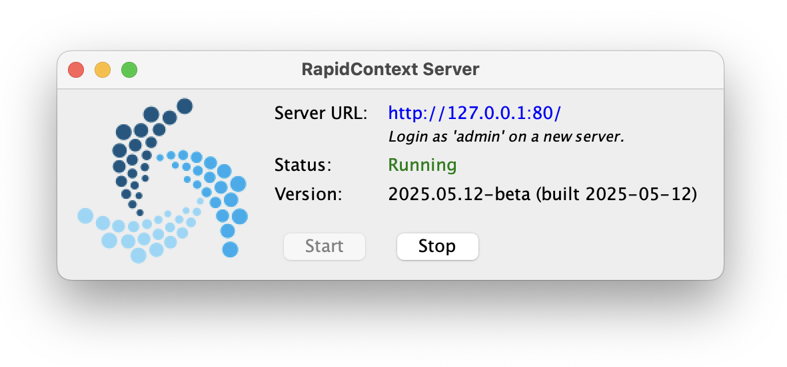
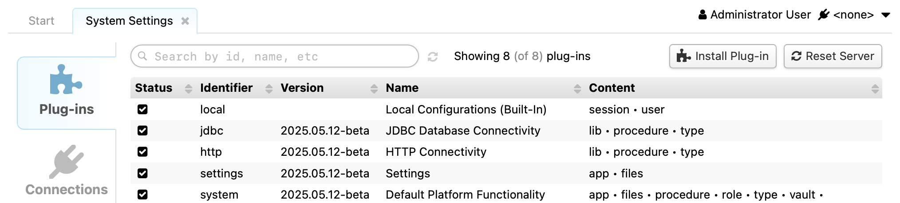

| Documentation | Installing & Connecting |
RapidContext comes bundled with most of its dependencies. A special server launcher is also available for Mac OS X.
RapidContext can be installed either as a stand-alone server (recommended) or inside a Java Servlet container, such as Jetty or Tomcat. To install and start the stand-alone server, follow the steps below:
| Linux, Mac OS & Unix | Windows |
|---|---|
| 1. #> cd /opt | 1. Go to Program Files folder |
| 2. #> unzip rapidcontext-XYZ.zip | 2. Unpack rapidcontext-XYZ.zip |
| 3. #> cd rapidcontext-XYZ.zip | 3. Open directory rapidcontext-XYZ/bin |
| 4. #> bin/rapidcontext | 4. Double-click rapidcontext.bat |
To install RapidContext in a Java servlet container, use the file rapidcontext.war inside the ZIP distribution and follow the deployment instructions for your server.
The RapidContext server is also available as a convenient RapidContext.app launcher application for Mac OS X. Once started, it shows a simple server controlpanel as below:


A new RapidContext installation can be accessed with the following login:
| Login: | admin |
|---|---|
| Password: | blank (anything is accepted) |
It is important to change the password for the default admin user before allowing other users onto the system.
Plug-ins are installed or updated by using the built-in Admin app. The steps below explains how to install or update a plug-in:
Plug-Instab
Software Install & Updatepane at the top (see screenshot)

Browse...button and choose the plug-in file
Install / Update Plug-Inbutton
After installing or unloading some plug-ins, the client or server must be restarted for the plug-in loading to have effect:
Plug-ins can both be loaded and unloaded in the built-in Admin app. The steps below explains how to do it.
Plug-Instab
Plug-In Listpane (see screenshot)

Loador
Unloadbutton
Normally, it is not necessary to completely remove a plug-in from the server. Leaving it in unloaded status ensures that it has no effect on the system. Nevertheless, a plug-in can be completely removed by the following steps:
Plug-Instab
Restartbutton in the Admin app


There is currently no user interface for editing or creating environment files, so they must be manually created as environment/[identifier].properties in one of the plug-ins. See below for a simple example environment file.
# General properties
id = EXAMPLE
type = environment
description = The example environment
connections = EXAMPLE/
A RapidContext server may currently only have a single environment loaded (although multiple connections are supported). This environment is used for all users, apps and procedures on the server. If several environments are in use, separate RapidContext server instances should currently be installed.